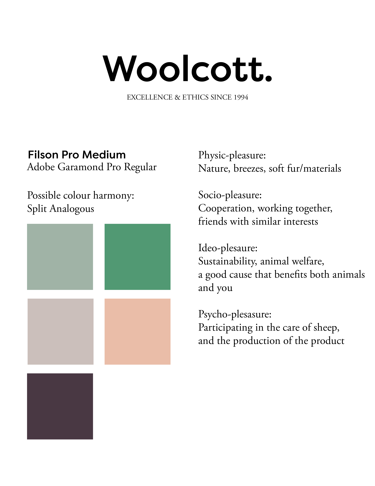
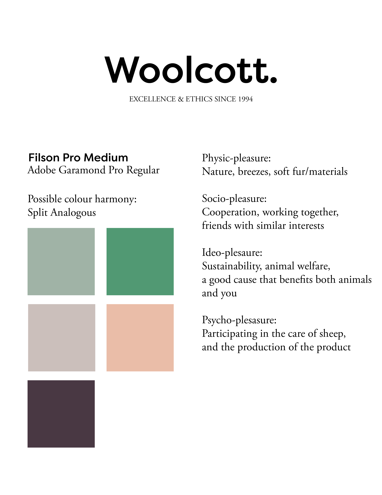
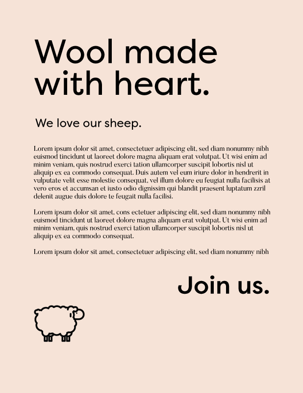
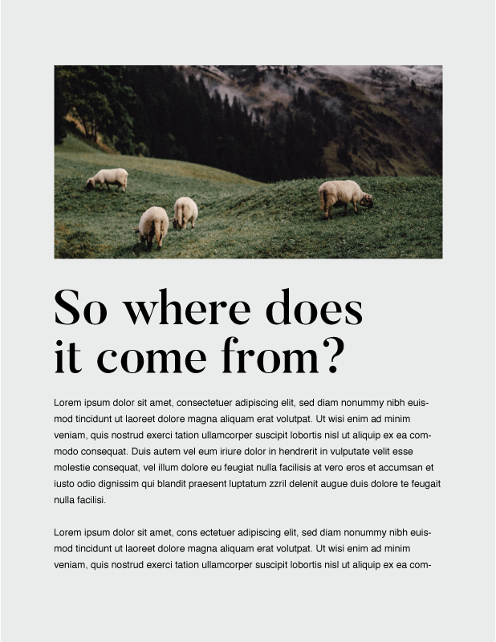
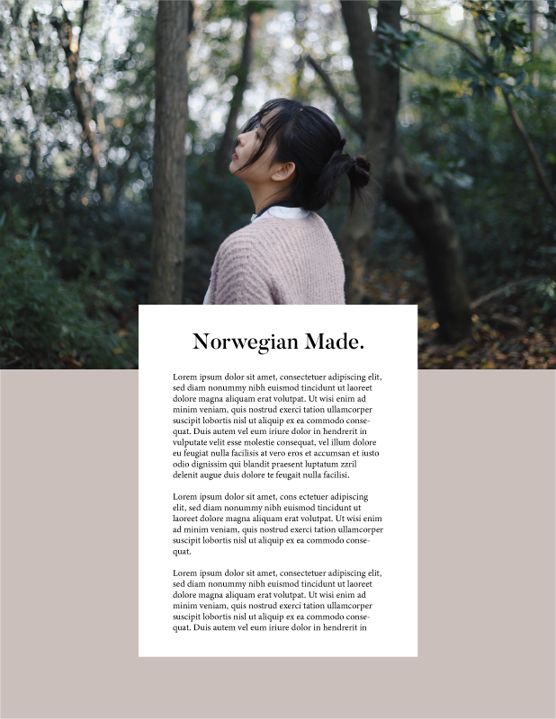

Woolcott: Site Design

A graphic design project using Adobe Illustrator and Adobe Photoshop to draft mockups for a fictional ethical wool producer and retailer. Worked with moodboards and modernist vs. postmodernist approaches.
Type, Colour, and Moodboard Ideation
 

Drafting vertical rhythm



Final Designs
PDFs linked via Dropbox; please wait for files to load completely for full resolution!
Credits
Site images sourced from Unsplash (1, 2) and Wikipedia; body text from Dale of Norway; fictional company title inspired by Vampire Weekend.